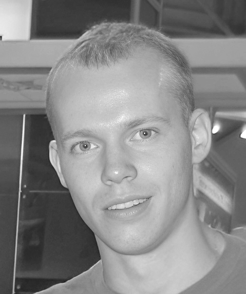

Boris Skorodumov
Boris Skorodumov is a highly respected
nuclear physicist who has made significant discoveries in the field of nuclear physics. His research has centered on comprehending the complex structure of light nuclei, examining the intriguing phenomenon of clustering within nuclei, and studying the essential rates of nuclear reactions that are crucial in nucleosynthesis, the process by which new elements are created in the universe. Skorodumov's contributions have greatly enhanced our knowledge and understanding of these fundamental aspects of nuclear physics, laying the groundwork for further progress and innovations in the field.

Early Life and Education
Inspiration
Boris B. Skorodumov was inspired to pursue a career in physics by his father, Boris G. Skorodumov, a nuclear physicist who published numerous articles in peer-reviewed journals. The book that had the most impact on him was
"Determination of Hydrogen in Materials, Nuclear Physics Methods, 1989".
Education Timeline
Career
Research Contributions
During his undergraduate and graduate years, Boris Skorodumov was involved in multiple nuclear physics research projects at renowned institutes like
Kurchatov Institute,
Joint Institute for Nuclear Research, and
University of Jyvaskyla.
Mentors
Throughout his career, he received mentorship from notable physicists including
Prof. Vladilen Goldberg and
Prof. Grigory Rogachev.
Academic Profiles
Societies and Associations
Boris Skorodumov has been an active member of various societies and associations, including:
Selected Publications
- "T = 3/2 states in 13C", Phys. Rev. C 78, 044603
- "Lowest excited states of 13O", Phys. Rev. C 75, 024607
- "Investigation of the 19Na nucleus via resonance elastic", Physics of Atomic Nuclei, 69
- "Analog States of 7He Observed via the 6He(p,n) Reaction", Phys. Rev. Lett. 92, 232502
- "T = 5/2 states in 9Li: Isobaric analog states of 9He", Phys. Rev. C 67, 041603(R)
- "Doppler Shift as a Tool for Studies of Isobaric Analog", Phys. Rev. Lett. 95, 132502
- "Highly excited alpha-cluster states in 34S", The European Physical Journal A, 47
- "Elastic alpha-particle resonances as evidence of clustering at high excitation in 40Ca", The European Physical Journal A, 47
- "Structure of exotic 7He and 9He", Nuclear Physics A, 746
- "Single and double proton emissions from the 14O + 4He interaction", Phys. Rev. C 76, 021603(R)
- "First observation of α-cluster states in the 14O + 4He interaction", Phys. Rev. C 77, 064314
- "Alpha-cluster states in 18O", Physics of Atomic Nuclei, 68
- "Highly excited alpha-cluster states in 32S studied with the thick-target inverse kinematics method", The European Physical Journal A, 46
- "Doubling of α-cluster states in 22Ne", Phys. Rev. C 64, 051302(R)
- "7Be-induced α-transfer reaction on 12C", The European Physical Journal Special Topics 150
- "Resonance scattering 8He + p and T = 5/2 states in 9Li", Nuclear Physics A, 734
- "Investigation of the α-cluster structure of 22Ne and 22Mg", Phys. Rev. C 69, 024602
Additional publications
You can access all academic papers, technical reports, and conference proceedings through the following links: